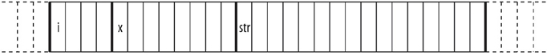

首页 > 编程笔记
C语言联合（union）的定义和初始化
当定义结构对象时，如果没有显式地初始化它们，则会采用一般初始化规则：如果该结构对象属于动态存储类型，那么其成员具有不确定的初始值。另一方面，如果结构对象具有静态存储周期，那么其非指针成员初始值是 0，其指针成员初始值是空指针。
不同于结构成员——它们在结构中都具有单独的内存位置，联合成员则共享同一个内存位置。也就是说，联合中的所有成员都是从相同的内存地址开始。因此，可以定义一个拥有许多成员的联合，但是同一时刻只能有一个成员允许含有一个值。联合让程序员可以方便地通过不同方式使用同一个内存位置。
下面的例子定义了一个名为Data的联合类型，它有 3 个成员：i、x 和 str：
这种类型的对象可以存储一个整数、一个浮点数或一个短字符串。下面的声明定义了一个 union Data 类型的对象 var 和一个 unionData 类型的数组 myData，它有 100 个元素（联合的空间大小为它最大成员的空间大小）：
如果想获得联合的空间大小，可以使用 sizeof 运算符。对上例来说，sizeof（var）会返回 16，而 sizeof（myData）则返回 1600。
如图 1 所示，联合中所有成员都是从内存中同一个地址开始的。

图 1
为展示联合和结构的差异，看看下面定义的 struct Record，它具有成员 i、x 和 str：
获取联合成员的方式和获取结构成员的方式一样。唯一的差异在于，当改变一个联合成员的值时，实际上修改了该联合所有成员的值。下面的一些例子使用联合对象 var 和 myData：
与结构一样，每个联合类型的成员都拥有各自的命名空间。所以在上例最后的语句中，索引变量 i 和联合成员 i 代表两个不同的对象。
程序员要确保联合对象的内存内容被正确地解释和使用。联合内成员的类型不同，允许程序员采用不同的方式解释内存中的同一组字节值。例如，下面的循环使用联合来展示一个 double 值在内存中的存储形式：
该循环从 var.x 的最高位字节开始，生成下面的输出：
与结构一样，C99 允许在初始化器中使用成员指示符来指示哪个成员被初始化。而且，如果初始化器没有成员指示符，那么就与联合内的第一个成员关联。具有自动存储类的联合对象也可以使用已有的同类型对象来初始化。下面是一些初始化例子：
数组 myData 中的元素如果没有指定初始化器，会被隐式地初始化为 0 值。
不同于结构成员——它们在结构中都具有单独的内存位置，联合成员则共享同一个内存位置。也就是说，联合中的所有成员都是从相同的内存地址开始。因此，可以定义一个拥有许多成员的联合，但是同一时刻只能有一个成员允许含有一个值。联合让程序员可以方便地通过不同方式使用同一个内存位置。
定义联合（union）
联合的定义方式与结构是一样的，只是把关键字 struct 改成 union：union [标签名称]{成员声明列表};
下面的例子定义了一个名为Data的联合类型，它有 3 个成员：i、x 和 str：
union Data { int i; double x; char str[16]; };
这种类型的对象可以存储一个整数、一个浮点数或一个短字符串。下面的声明定义了一个 union Data 类型的对象 var 和一个 unionData 类型的数组 myData，它有 100 个元素（联合的空间大小为它最大成员的空间大小）：
union Data var, myData[100];
如果想获得联合的空间大小，可以使用 sizeof 运算符。对上例来说，sizeof（var）会返回 16，而 sizeof（myData）则返回 1600。
如图 1 所示，联合中所有成员都是从内存中同一个地址开始的。
图 1
为展示联合和结构的差异，看看下面定义的 struct Record，它具有成员 i、x 和 str：
struct Record { int i; double x; char str[16]; };

图 2
如图 2 所示，结构对象中每个成员使用内存中的不同位置。图 2
获取联合成员的方式和获取结构成员的方式一样。唯一的差异在于，当改变一个联合成员的值时，实际上修改了该联合所有成员的值。下面的一些例子使用联合对象 var 和 myData：
var.x = 3.21; var.x += 0.5; strcpy( var.str, "Jim" ); // 占用了var.x的内存位置 myData[0].i = 50; for ( int i = 0; i < 50; ++i ) myData[i].i = 2 * i;
与结构一样，每个联合类型的成员都拥有各自的命名空间。所以在上例最后的语句中，索引变量 i 和联合成员 i 代表两个不同的对象。
程序员要确保联合对象的内存内容被正确地解释和使用。联合内成员的类型不同，允许程序员采用不同的方式解释内存中的同一组字节值。例如，下面的循环使用联合来展示一个 double 值在内存中的存储形式：
var.x = 1.25; for ( int i = sizeof(double) － 1; i >= 0; --i ) printf( "%02X ", (unsigned char)var.str[i] );
该循环从 var.x 的最高位字节开始，生成下面的输出：
3F F4 00 00 00 00 00 00
初始化联合（union）
与结构类似，通过初始化列表（initialization list）来初始化联合对象。但是，对联合来说，列表只有一个初始化器（initializer）。与结构一样，C99 允许在初始化器中使用成员指示符来指示哪个成员被初始化。而且，如果初始化器没有成员指示符，那么就与联合内的第一个成员关联。具有自动存储类的联合对象也可以使用已有的同类型对象来初始化。下面是一些初始化例子：
union Data var1 = { 77 },
var2 = { .str = "Mary" },
var3 = var1,
myData[100] = { {.x= 0.5}, { 1 }, var2 };
数组 myData 中的元素如果没有指定初始化器，会被隐式地初始化为 0 值。
关注公众号「站长严长生」，在手机上阅读所有教程，随时随地都能学习。内含一款搜索神器，免费下载全网书籍和视频。

微信扫码关注公众号